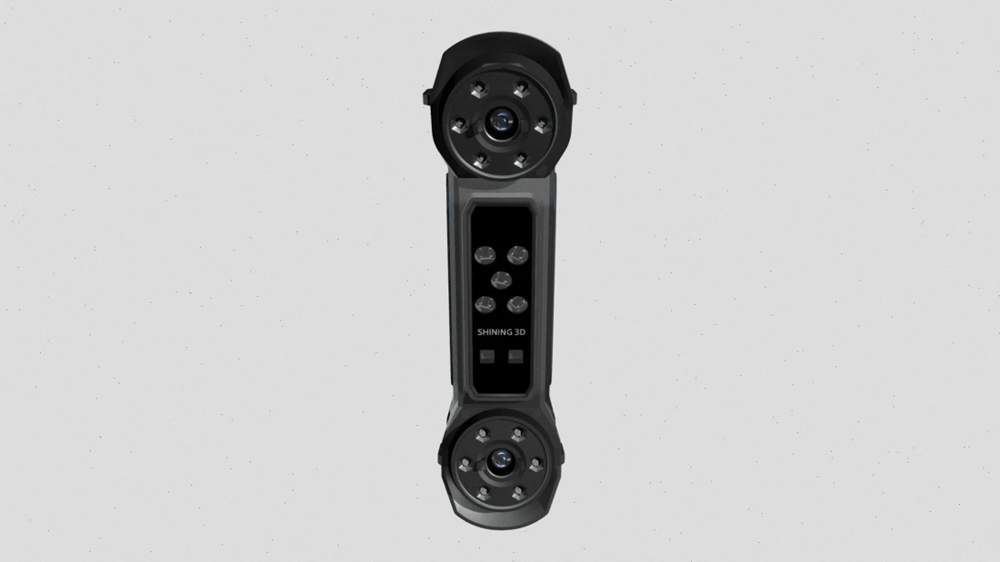
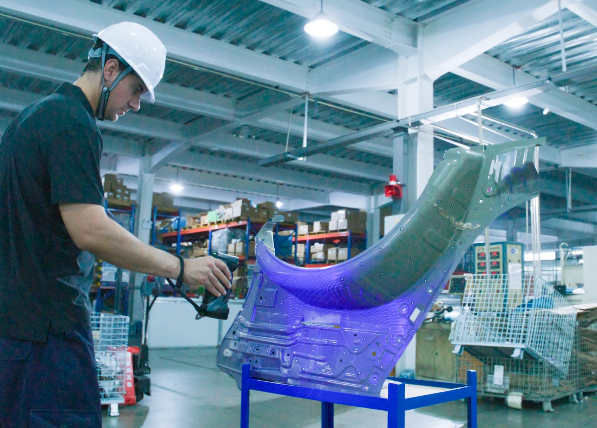
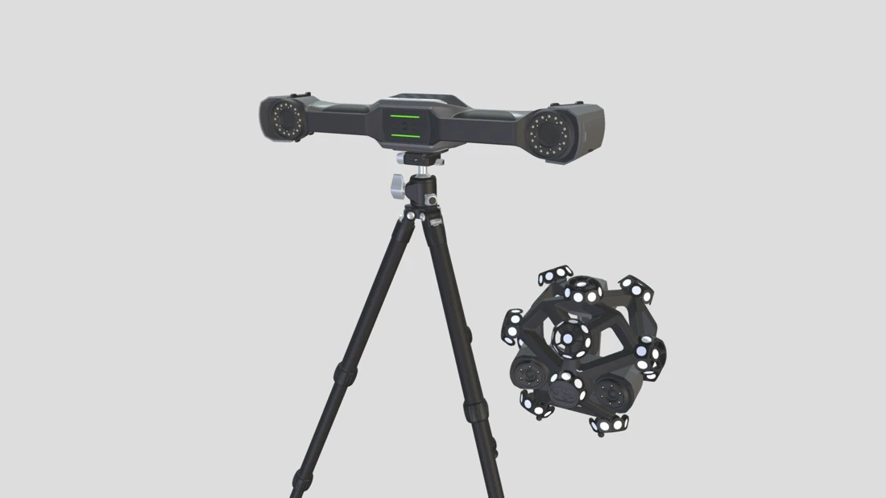
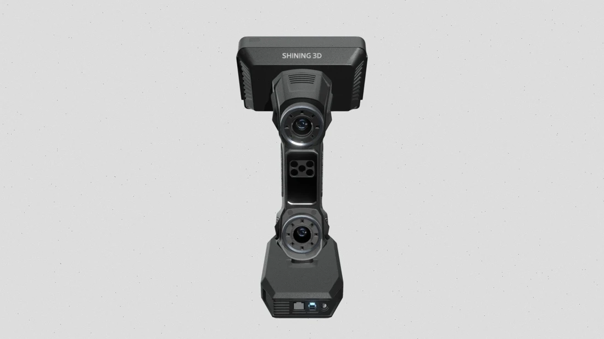
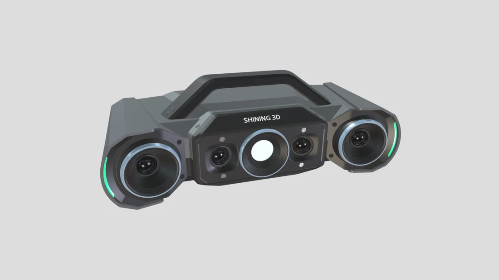
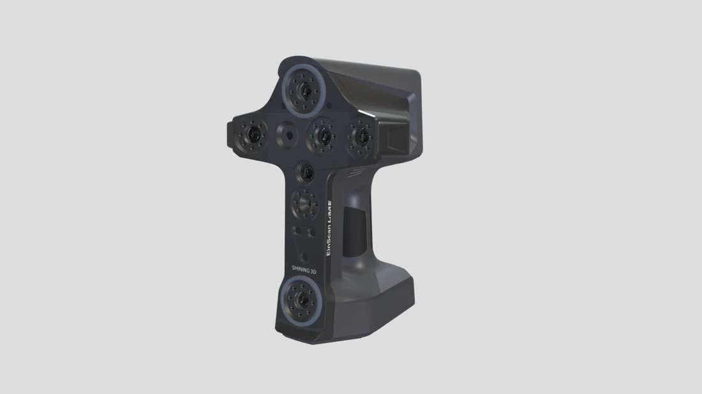
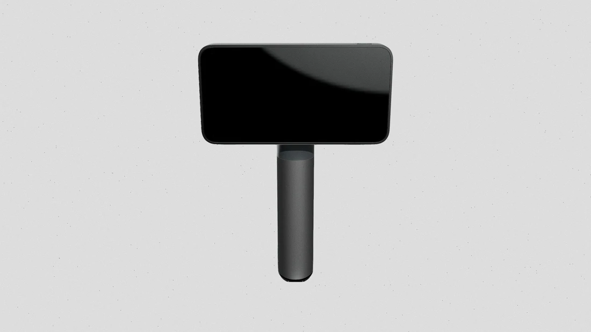

NUEVA GENERACIÓNSHINING 3DInalámbrico · Láser + infrarrojo
FreeScan Combo+ Wireless
Escáner 3D portátil híbrido inalámbrico para metrología.
Precisión de hasta 0.02 mm

Explora soluciones de digitalización 3D para medición, inspección, diseño e ingeniería. Encuentra la tecnología que mejor responde a tu aplicación.
DESCUBRE TU SIGUIENTE DIMENSIÓNDos caminos. El mismo objetivo:
transformar la forma en que trabajas.
Control dimensional, inspección y evaluación de piezas y componentes.
Captura objetos físicos y conviértelos en datos 3D para crear y desarrollar.
Para aplicaciones donde conocer la geometría de una pieza y evaluar sus dimensiones es parte esencial del proceso.

NUEVA GENERACIÓNSHINING 3DEscáner 3D portátil híbrido inalámbrico para metrología.

SHINING 3DSistema dinámico de escaneo y seguimiento 3D.

SHINING 3DEscáner 3D de metrología autónomo y listo para inspección.
 SHINING 3D
SHINING 3DEscáner 3D portátil láser para aplicaciones metrológicas.

SHINING 3DSistemas ópticos de inspección 3D de alta precisión.
Soluciones para digitalizar objetos físicos y llevar su geometría al entorno digital para diseño, documentación y desarrollo.

SHINING 3DEscáner 3D láser todo en uno, inalámbrico y a color.

SHINING 3DEscáner 3D portátil con distintos modos de captura.
De una superficie real a información que puedes medir, analizar y transformar.
El escáner registra la superficie del objeto mediante tecnología óptica.
La captura genera información espacial que representa la geometría de la pieza.
Los datos se alinean y procesan para obtener una representación digital utilizable.
El resultado apoya tareas de inspección, diseño o ingeniería inversa, según el equipo y el flujo de trabajo.
Captura y documentación de componentes y piezas.
Comparación de geometrías y apoyo a la inspección dimensional.
Datos para reconstrucción y desarrollo de modelos 3D.
Digitalización para apoyar procesos de diseño y modificación.
Cuéntanos qué necesitas. Cada pieza, cada proceso y cada objetivo merecen una solución a su medida.
Esta es una maqueta. No se ha enviado ni guardado ningún dato.